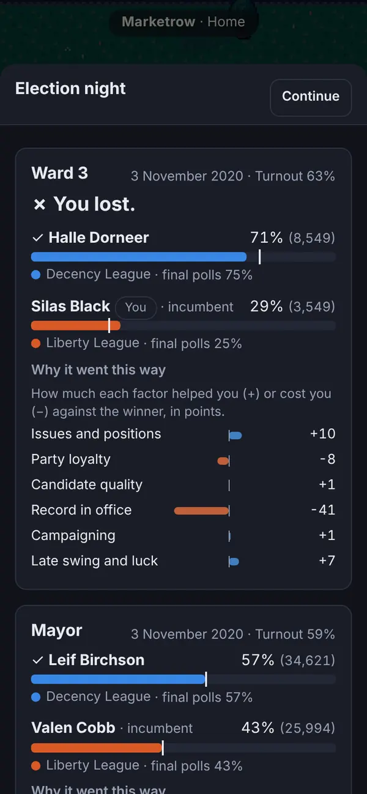
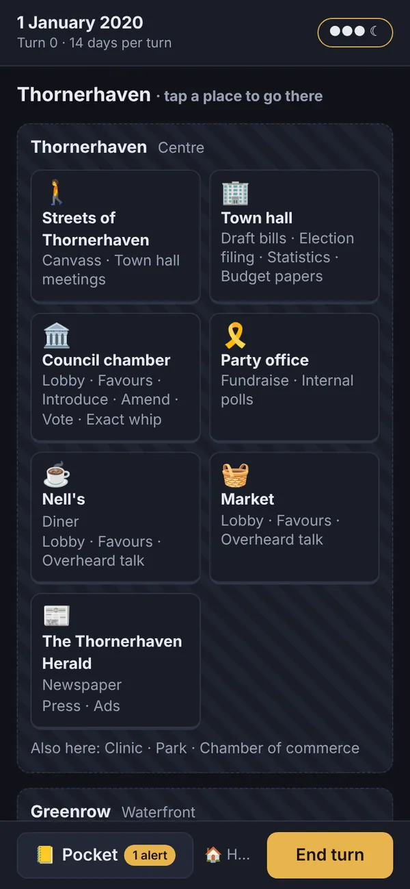
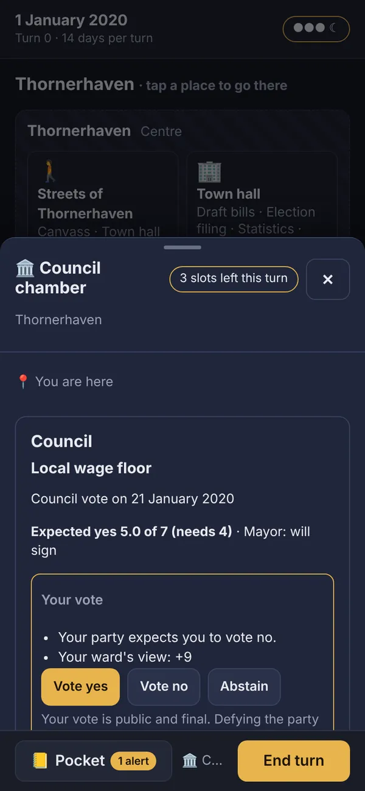

Still in developmentFree to play in your browserWorks offline
Mandate
Night editionMorning editionUpdated %BUILD_DATE%Price: free
A political career roguelike
Unknown councillor sets sights on the presidency
You can only do what you can get others to do.
Mandate is a strategy game about a political career. Every game builds a new country from scratch, with
its own map, towns, economy, parties and twenty years of history, and then gives you a seat on one town’s
council. You draft and pass bills, look after your ward, run for mayor and keep climbing until the voters,
your party or your own mistakes stop you.
The country generated from seed 4040. The capital is the gold square on the east coast.
Enter the same seed and you’ll get the same country.
Election night
Councillor who did nothing loses Ward 3 by 36 points
There’s no dice roll on election night. Each neighbourhood has its own mix of voters, grouped by age and
income, and each group decides whether to vote and who to vote for. That depends on the issues they care
about, how loyal they are to a party, what they think of the candidates, and what you’ve actually done in
office.
Polls only survey a sample of those voters, so they can miss, and because pollsters tend to make similar
assumptions they often miss in the same direction. In this race they had the councillor on 26%. He got 32%
and still lost badly.
For this example we let a test player end every turn without doing anything for ten months. Every result in the game comes with a breakdown like the one shown here, and this one makes the problem obvious: his record in office cost him 34 points.
Ward 3 council seat
3 November 2020 · Turnout 63%
Ward 3 result and final polls
Candidate
Votes
Share
Final poll
Elected Edda Brooker
Decency League
8,151
68%
74%
Fen Black the player, incumbentLiberty League
3,774
32%
26%
final poll
Why it went this way points for (+) or against (−) the player, against the winner
Factors behind the result, in points
Issues and positions
+9
Party loyalty
−11
Candidate quality
+1
Record in office
−34
Campaigning
+1
Late swing and luck
+8
From a real game (seed 4040). The numbers come straight from the game, and the names and parties were
generated.

The same result on the game’s election night screen.
The career
Only the first rung is built so far
Presidency
Coming The race for president, and what happens once you win it.
National
Coming A seat in the national legislature, cabinet jobs and a say over the economy.
Regional
Coming Regional office and the race for governor, with travel between towns.
Local
Playable now A seat on the town council. Draft bills, vote on
them, look after your ward, or give up the seat to run for mayor.
Around town
You go to places to get things done
Your town is made up of places, and each one is for something different. Walking around costs nothing, but
every action uses one of the three time slots you get each turn, plus one late in the evening. If you’d rather
not walk, pick an action from your agenda and the game takes you to the right place. Your notebook keeps the
basics to hand, but for the full picture you have to go and look.
Council chamber
Vote, introduce and amend bills, and see exactly who’s voting which way.
Town hall
Draft bills, file to run for office, and read the budget and the town’s figures.
Party office
Raise money and see the party’s private polling.
The diner
Meet colleagues in the evening to lobby and trade favours, and overhear what’s worrying people.
Market, union hall
Lobby people during the day and hear what’s on their minds.
The newspaper
Give statements to the press and buy ads.
Community centre
Hold a public meeting for one neighbourhood.
The streets
Knock on doors, one neighbourhood at a time.
Home
Rest and get your health back.

The town screen as it looks today.

A vote in the chamber where your party wants a no and your ward wants a yes.
This screen is being replaced by a pixel-art town you can walk around in.
Geography
A new country every game
Each game generates its own terrain, rivers and coastline, and puts towns where people would plausibly
settle. Regional borders follow the land. Eight industries, from farming to manufacturing, decide where the
jobs and wages are, and the parties form around whatever divides that particular country. Floods, droughts,
recessions and plant closures happen when the simulation says they do, not on a script. You can choose one
of five starting scenarios or leave it to chance.
Seed 777 Resource-rich frontier. You start in Mireibridge.
Seed 20260 Drought-prone farmland. You start in Hollinhaven.
Seed 1848 Wealthy coastal nation. You start in Fenbridge.
The trade-offs
Everything you do has a cost
What each action gives you and what it costs
You choose to
You get
It costs
Canvass
Strong, lasting support in one neighbourhood
A whole day, and some of your health
Buy ads
A little recognition across the whole town, without spending any time
Money, and the effect wears off quickly
Fundraise
Money, and standing with your party
Your health, and some goodwill from lower-income voters
Talk to the press
Reach across the whole town
A chance of a gaffe (you see the odds first)
Hold a town hall
A neighbourhood's attention, and a spotlight on your bill
A rough reception in places where you’re unpopular
Meet late at the diner
A colleague's vote
Some health, and a small legal risk
Defy your party
Your ward’s approval, if they agree with you
Your standing with the party
Run for mayor
A bigger office
Your council seat, win or lose
Bills have side effects too. Building work disrupts a neighbourhood, a minimum wage costs some jobs, and the
people a law hurts remember who sponsored it.